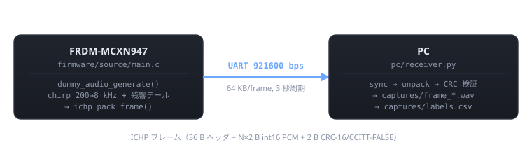

シーン
外出中に空が暗くなり、雨が降り出した。スマホを取り出して「あれ、窓閉めてきたっけ…？」と不安になる。 家まで戻る時間も余裕もない。
IchiPing のソリューション
1 個のマイクと 1 発の Ping（能動音響）だけで、家中の窓・扉 32 通りの組合せ状態を一発推定する エッジ AI デバイス。これに 降雨センサ + M5Stamp Pico (ESP32) をデモ用周辺機器として追加することで、次のフローが成立する:
- 屋外の降雨センサが雨を検出 (GPIO 入力)
- M5Stamp Pico → UART で IchiPing コントローラに推論トリガを送る
- IchiPing が 1 Ping → MCU 上の Neutron NPU で 1.89 ms 推論 → 窓・扉 32 状態のうちどれかを特定
- M5Stamp Pico が Wi-Fi 経由でスマートホームクラウドに結果を送信
- ユーザのスマホに通知「窓 a が開いてます！」
技術検証 (これまでに達成したこと)
- 単一マイク + 単一スピーカで 32 真状態すべてが識別可能 と判明 (MCU 実機 32cls / 14cls とも 100%, XL モデル 104K params)
- 当初想定した「閉扉の向こうは観測不能 → 14 等価クラスが理論上限」は、 実扉の漏れ (-20〜-30 dB 減衰) により否定された。詳細: v12345 検証レポート
- 推論は MCXN947 内蔵 Neutron NPU で 7/7 op = 100% NPU 化、1.89 ms で完結
ハードウェア前提（v1）
| 役割 | 部品 | 備考 |
|---|---|---|
| MCU | FRDM-MCXN947 | NPU + PowerQuad + I²S 多系統 |
| マイク | INMP441 | I²S MEMS, 24-bit。DC オフセット問題なしで chirp/RIR に好適 |
| スピーカ駆動 | MAX98357A I²S DAC | Class-D 3.2 W |
| サーボ駆動 | PCA9685 + SG90 ×5 | I²C, 16ch PWM (オチ 2 の「自動閉」を担当) |
| 表示 | ILI9341 2.4" TFT 240×320 | SPI (FC3 LPSPI), RGB565（採用根拠） |
| UI | トグル ×5 + EXEC + LED ×2 | 真値ラベル入力 / 推論トリガ |
| PC 連携通信 | USB-C CDC ／ OpenSDA UART 921600 bps | 学習データ収集・実機検証用 |
デモ用追加機器（雨検出 → スマホ通知シナリオ）
| 役割 | 部品 | 接続 |
|---|---|---|
| 降雨センサ | YL-83 等の安価モジュール | GPIO デジタル入力、屋外設置 |
| Wi-Fi モジュール | M5Stamp Pico（ESP32-PICO-D4） | IchiPing と UART (LPUART) 接続、降雨センサを GPIO で読む、Wi-Fi でクラウド送信 |
| スマートホーム連携 | クラウド (Home Assistant / 任意の MQTT broker) | M5Stamp から push、スマホアプリで受信 |
詳細仕様は docs/spec.html（正本 digikey_project/details/C4-IchiPing.html の完全コピー）参照。
現在のステータス：v12345 完了 — MCU 実機 32cls / 14cls とも 100%
実ハード（INMP441 / MAX98357A / PCA9685 / SG90 ×5 / ILI9341 / トグル）配線・ファームウェア統合完了、 PC で学習・量子化・Neutron 変換、MCU 上で実機推論 (1.89 ms / NPU 比率 100%) まで一気通貫で動作。 8 モデル × 32 状態の sweep で 32cls / 14cls とも 100% 達成 (v12345 検証レポート)。 当初予想だった「14 等価クラスが情報理論的天井」は実扉の漏れ (-20〜-30 dB 減衰) により否定され、 32 真状態すべてが識別可能と判明。

クイックスタート
1. ファーム側
- MCUXpresso IDE で
frdmmcxn947SDK から LPUART ベースのテンプレートを作成 source/main.cを 09_collector/main.c で置き換え（最新の v0.5 統合版）- ビルド → OpenSDA で書き込み
詳細は firmware/README.html。
2. PC 側（uv 推奨）
cd pc
uv sync # pyserial だけで動く軽量モード
# あるいは解析機能つきで:
uv sync --extra training # numpy/scipy/matplotlib/torch 同梱
uv run python collector_client.py --port COM7 --out ../captures
OpenSDA の COM ポート番号はデバイスマネージャで確認。venv 派の手順は pc/README.html、VS Code でセットアップする場合は docs/vscode_setup.html 参照（F5 で受信・検証が走る）。
3. キャリブレーション + 解析（calibrator.py）
cd pc
# 1) SPK/マイク自由音場キャリブレーション計測
uv run python calibrator.py record --port COM7 --out ../captures/raw.wav
uv run python calibrator.py analyze ../captures/raw.wav
# 2) フィルタ自動設計 → 適用 → 再計測 → 比較
uv run python calibrator.py design-filter ../captures/raw.wav --out ../captures/filter.json
uv run python calibrator.py upload-filter --port COM7 ../captures/filter.json --enable
uv run python calibrator.py record --port COM7 --out ../captures/filtered.wav --filter-on
uv run python calibrator.py compare ../captures/raw.wav ../captures/filtered.wav
詳細は 走査音考察 §3.A、AI スクリプト用 --once モードは pc/README.html §A2。
通信方式
v0.1 は OpenSDA UART 921600 bps（最も簡単に立ち上がる構成）。1 フレーム 64 KB を約 556 ms で転送、フレーム周期 3 秒なので帯域は余裕。USB CDC への置換は v0.3 以降のロードマップ項目。 PC ↔ ボードの正式プロトコル仕様: collector_protocol.md。
ロードマップ
| バージョン | 内容 | 状態 |
|---|---|---|
| v0.1 | シリアル疎通 + 実ハード統合 + Day 0 サニティチェック | 完了 |
| v0.2 | 走査音方式確定 (chirp + baseline diff + Welch FFT) | 完了 |
| v0.3 | CMSIS-DSP rFFT (Welch) で RIR 抽出パイプライン MCU 実装 | 完了 |
| v0.4 | 32 状態 × v1+v2+v3+v4+v5 (7,360 sample) 収集 + baseline jittering ×5 = 36,800 | 完了 |
| v0.5 | 14cls + 32cls 両 head 共存モデル (Neutron 互換 XL, ~104K params) | 完了 |
| v0.6 | PC FP32 で MCU 等価精度確認 (32cls / 14cls とも 100%) | 完了 |
| v0.7 | INT8 量子化 + Neutron 変換 (NPU 比率 7/7 = 100%, 108 KB, 1.89 ms) | 完了 |
| v1.0 | MCU 実機 推論検証 (v12345 sweep, 8 モデル × 32 state) | 完了 |
| v1.5 | TFT (ILI9341) 表示 + EXEC ボタンによる手動デモモード完成 | 予定 |
| v1.6 | baseline jittering 拡張 (別室 baseline 投入で更なる汎化) | 予定 |
| v2.0 | ML63Q2557 + Solist-AI への移植（ROHM EDGE HACK 提出版） — 技術課題まとめ: solist_porting.html | 予定 |
詳細タスクは tasks.html、次の意思決定は near_term_plan.html。
ライセンス
未定（DigiKey/ROHM コンテスト応募後に MIT 想定）。